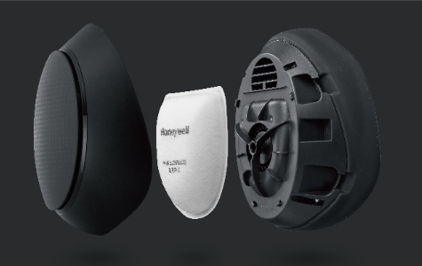

第一次會議記錄
時間：2020年3月13日 19:21~20:07pm 地點：Line群組
主席：張名期 紀錄審訂：張名期
出席：李秉則(10625106)、黃議徵(10625111)、張名期(10625112)、王浤豪(10625157)
報告主題：APP 介面分析主題與分工
I. 進度報告
因為是第一次討論所以沒有進度上的報告。
II. 討論事項
- 主題選擇
- 分析一個APP的介面
- 工作內容的分配
III. 討論內容逐字稿
10625112 張名期: 大家對於主題有想法嗎?
10625106 李秉則: 沒什麼想法。
10625112 張名期: 那我們主題選擇血糖機如何?
10625111 黃議徵: 都可以。
10625112 張名期: 好!我剛好有看到一個APP關於測量血糖的叫做智抗糖，你們可以下載下來看一下，感覺還不錯。
10625157 王浤豪: APP有很多頁面我們該如何分析。
10625106 李秉則: 可以用老師鈄影片上的方法來分析我們要的方向。
10625111 黃議徵: 還是我們先分工跟分配每次會議紀錄的人好了。
10625112 張名期: 那第一次記錄我先來好了，然後就按照學號依序記錄，我回去會整理一下紀錄要的格式然後上傳到群組，之後都統一用一樣的格式。
10625106 李秉則: 太好了~
10625111 黃議徵: 那工作怎麼分配?
10625112 張名期: 大致上分為APP 應用程式的使用者介面分析、儀器設計專案、儀器設計手冊。(詳細說明如附圖)
圖(一) 期末設計報告
10625157 王浤豪: 我都行，剩下來的給我。
10625112 張名期: 那我負責APP的介面分析跟網頁設計，先搶先贏。
10625106 李秉則: 那我要儀器設計專案。
10625111 黃議徵: 我就儀器設計手冊好了。
10625112 張名期: 好~大致上先這樣，那浤豪就負責資料蒐集，可以 將找到的資料丟在群組。
10625157 王浤豪: ok~
10625112 張名期: 彼此間要互相幫忙，有問題都可以提出來，先來分析APP的介面吧~(對話冗長用表格總結)
圖(二) APP 介面初步分析
10625112 張名期: 大家還有其他問題嗎?
10625111 黃議徵: 下次開會記錄換誰?
10625112 張名期: 換秉則，時間跟地點會再決定，第一次會議就先到這裡。
IV. 決議事項
- 主題為血糖測量機
- 參考的APP為 智抗糖
- 初步分析出APP的介面
- 工作分配為，名期負責APP的介面分析跟網頁設計，秉則負責儀器跟設計專案，議徵負責儀器設計手冊，浤豪則是資料蒐集
第二次會議記錄
時間：2020年4月06日 19:00~20:00pm 地點：秉則家
主席：李秉則 紀錄審訂：張名期
出席：李秉則(10625106)、黃議徵(10625111)、張名期(10625112)、王浤豪(10625157)
報告主題：儀器設計主題與分工
I. 進度報告
APP 應用程式的使用者介面分析: (完成 50%)
- 應用程式功能說明 (應有 6 個以上頁面的 APP) 完成
- 按鍵-頁面關聯圖 完成
- 功能流程連結圖 完成
- PPT 頁面超鏈結模擬 未完成
- 使用者介面體驗優缺點分析 未完成
- 缺點改進建議 未完成
II. 討論事項
- 選擇儀器設計主題
- 儀器設計參考項目
- 決定要設計儀器
- 儀器分工
III. 討論內容逐字稿
10625111 黃議徵: 老師說:「這學期的儀器設計報告依舊是用[Circuit Schemes]中的電路圖做為使用表面黏著元件佈線的練習，儀器主題則是應景以[流行病防疫]相關的應用來發想設計需要的外型機構，流行病也放寬不限定只有肺炎。」
10625112 張名期: 所以我們討論事項一:選擇儀器設計主題，就也不用想了，老師已經幫我們決定了。
10625157 王浤豪: 嚴重的流行病最常見的應該是透過飛沫傳染吧!其他的傳染途徑都不會造成多大規模的問題。
10625106 李秉則: 我想到了，很多醫護人員在脫防護衣的時候碰到病毒因此確診，要不要用一個裝置手不會碰到，就能脫防護衣的裝置。
10625111 黃議徵: 聽起來不錯!不過好像用不到醫療的電路圖。
10625106 李秉則: 好吧算了!
10625112 張名期: YEE~我找到一個很酷的ㄟ!這著戴在脖子上的空氣清淨機不知道有沒有用ㄟ!
10625157 王浤豪: 應該沒有太大的用處吧!又不能過濾周遭所有的空氣!
10625111 黃議徵: 阿不然再戴口罩嘛!
10625112 張名期: 我上網找找有沒有比較屌的口罩!
10625111 黃議徵: 做一個跟太空人一樣的面罩在外接呼吸器就超級安全了。
10625157 王浤豪: 這樣就可以用到RESP的電路圖
10625112 張名期: 我找到這個口罩感覺很帥ㄟ!而且他標榜有N95的過濾的，還有風扇功能幫助呼吸，而且風扇農還能調節風的強度。

10625106 李秉則: 可是他出氣孔好像沒有過濾到。
10625157 王浤豪: 就把它改良把上排氣孔也裝過濾就好了。
10625111 黃議徵: 裡面可以裝測RESP的測量呼吸狀況，如果呼吸太困能就調節風量大小來幫助呼吸。
10625112 張名期: 好!感覺還不錯。
10625157 王浤豪: 要不要外面裝可以噴出酒精的可以讓外面空氣變比較乾淨，又可以順便用酒精乾洗手。
10625106 李秉則: 可以喔!
10625112 張名期: 那就這樣定了喔!
10625106 李秉則: 那上次討論完後，完成了多少
10625112 張名期: APP 應用程式的使用者介面分析完成大概50%，應用程式功能說明完成，按鍵-頁面關聯圖完成，功能流程連結圖完成，PPT頁面超鏈結模擬未完成，使用者介面體驗優缺點分析未完成，缺點改進建議未完成。

IV. 決議事項
- 儀器主題為口罩
- 參考N95防疫智慧型動空氣清淨機，並加入呼吸測量和噴出酒精
- 工作分配為，名期負責APP的介面分析跟網頁設計，秉則負責儀器、設計專案，議徵電路設計，浤豪則是外殼設計
第三次會議記錄
時間：2020年4月20日 22:00~23:00 pm 地點：秉則家
主席：王浤豪 紀錄審訂：王浤豪
出席：李秉則(10625106)、黃議徵(10625111)、張名期(10625112)、王浤豪(10625157)
報告主題：儀器設計報告網頁架構
I. 進度報告
APP 應用程式的使用者介面分析: (完成 95%)
- 應用程式功能說明 (應有 6 個以上頁面的 APP) 完成
- 按鍵-頁面關聯圖 完成
- 功能流程連結圖 完成
- PPT 頁面超鏈結模擬 大致完成
- 使用者介面體驗優缺點分析 完成
- 缺點改進建議 完成
II. 討論事項
關於細菌過濾面罩的
- 背景
- 動機
- 原理
- SWOT
- 心智圖
III. 討論內容逐字稿
10625157 王浤豪: 各位晚上好~今天來討論一下我們哦網頁架構吧，除了內容要有動機目的之外各位還有甚麼想法嗎?
10625112 張名期: 有喔，內容還要包含SWOT跟心智圖，跟背景和原理的介紹喔~
10625157 王浤豪: 感謝提醒，動機的話我們之前有討論過了對吧?
10625106 李秉則:就是流行病最常見的飛沫傳染來改良市面上的那個有標榜N95過濾跟風扇幫助呼吸的，然後加上RESP來監測呼吸狀況，看呼吸困難程度來開啟。
10625111 黃議徵: 跟那個什麼，外面加裝酒精噴霧來做周遭跟面罩表面的殺菌，還有排氣孔要加過濾網。
10625112 張名期: 那這樣背景動機都有了!不過到時候網站介紹還要更清楚詳細喔~那原理的部分我們是不是要來查一下RESP的運作方式啊?
10625111 黃議徵: 要喔，網站上還是要好好說明產品的。
10625157 王浤豪: ㄟ~那個阿，SWOT是甚麼來著˙?
10625106 李秉則: 好像是甚麼優勢劣勢機會與威脅的分析吧，應該是我們分析產 品可能的狀況。
10625112 張名期: 那就按照上次的分工麻煩秉則做囉!
10625106 李秉則: 行!
10625111 黃議徵: 那我們想一下網頁架構的部分吧，老師有給範例長這樣:
10625112 張名期: 我覺得可以參考一些網站，把那些條目分類然後摺疊起來，游標過去再展開的那種!
10625157 王浤豪: 可以喔!這樣畫面上應該可以簡約很多，我覺得也比較好看。
10625111 黃議徵: 而且這樣也可以減少別人觀看時的時間，直接從分類找項目就可以了。
10625157 王浤豪: 這種感覺嗎?
10625111 黃議徵: 對~我覺得這樣還可以，看到時候條目要放旁邊還是上面，然後背景可以放一下。
10625106 李秉則: 我覺得我們背景也可以比較科技感的那種。
10625112 張名期: 好!感覺還不錯，阿對了，記得要有首頁喔。
10625157 王浤豪: 阿對了，還有心智圖的部分ㄟ，那個又是啥來著?
10625106 李秉則: 你要不要負責那個，順便學一下。
10625112 張名期: 好!
10625111 黃議徵: 好!
10625157 王浤豪: 呃...好ㄅ
10625111 黃議徵: 那上次進度到哪裡了啊?
10625112 張名期: APP 應用程式的使用者介面分析完成95%了，PPT頁面超鏈結模擬大致完成剩下一些小部分要修改，使用者介面體驗優缺點完成，缺點改進建議也完成。
IV. 決議事項
- 版面配置採用分類後摺疊起來，游標過去在展開的形式
- 網頁中各部分介紹內容的工作分配為，名期作背景動機，秉則負責強弱危機分析(SWOT)，議徵原理，浤豪則是心智圖